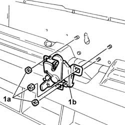
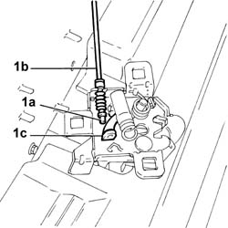
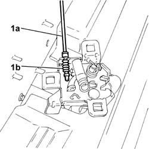
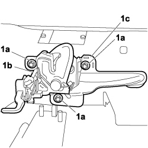

7025A34 bonnet lid lock (one) - r+r or repair
- Path
- Procedures > 70 FITTINGS > 7025 COMPARTMENT LIDS > 7025A bonnet lid > 7025A34 bonnet lid lock (one) - r+r or repair
- Kind
- repair procedure (removal / refitting; the operation number is the code)
- Applies to
- engines: 1.4 8v, 1.6 16v, 1.3 JTD 16V, 1.9 JTD 8V; production: da 12/03; only with equipment: MY 2005
- Interactive page
- https://sloeber94.github.io/elrnDB-fDbl/en/#/2585102
Applies to: engines: 1.6 16v, 1.3 JTD 16V, 1.9 JTD 8V; all production periods
 Removing
Removing
 Refitting
RefittingOpen the bonnet.
1. Undo the nuts (1a) and remove the lock (1b).

Applies to: engines: 1.6 16v, 1.3 JTD 16V, 1.9 JTD 8V; all production periods
1. Release head (1a) of the opening cable (1b) from lever (1c).

Applies to: engines: 1.6 16v, 1.3 JTD 16V, 1.9 JTD 8V; all production periods
Refitting
RemovingCheck that the lock is not damaged.
Position the lock.
Connect the opening cable to the lever on the lock.
Screw in the nuts fixing the lock to the body without tightening them to torque.
Check that the lock and the striker match correctly.
If this is not the case, correct the position of the lock using the openings in the actual lock.
Also heck that the tailgate opening lever reaches the end of travel position correctly.
1. If this is not the case, adjust the flexible cable (1a) using the splining (1b) at the end of the actual cable.

Applies to: engines: 1.6 16v, 1.3 JTD 16V, 1.9 JTD 8V; all production periods
Tighten the nuts fixing the lock to the bodyshell and close the bonnet.
Applies to: engines: 1.4 8v, 1.6 16v, 1.3 JTD 16V, 1.9 JTD 8V; production: da 12/03; only with equipment: MY 2005
Removing
Refitting- Open the bonnet.
Op. 7055B08 GRILLE (ONE) ON FRONT BUMPER - R.R
1. Undo the nuts (1a) and remove the lock (1b) with antitamper guard (1c).

Applies to: engines: 1.4 8v, 1.6 16v, 1.3 JTD 16V, 1.9 JTD 8V; production: da 12/03; only with equipment: MY 2005
1. Release head (1a) of the opening cable (1b) from lever (1c).
Applies to: engines: 1.4 8v, 1.6 16v, 1.3 JTD 16V, 1.9 JTD 8V; production: da 12/03; only with equipment: MY 2005
Refitting
Removing- Check that the lock is not damaged.
- Position the lock in its seat.
- Connect the opening cable to the lever on the lock.
- Screw in the nuts fixing the lock to the body without tightening them to torque.
- Check that the lock and the striker match correctly.
- If this is not the case, correct the position of the lock using the square holes in the actual lock.
- Also check that the tailgate opening lever reaches the end of travel position correctly.
1. If this is not the case, adjust the flexible cable (1a) using the anchorage splining (1b) at the end of the actual cable.
Applies to: engines: 1.4 8v, 1.6 16v, 1.3 JTD 16V, 1.9 JTD 8V; production: da 12/03; only with equipment: MY 2005
- Tighten the nuts fixing the lock to the bodyshell and close the bonnet.
Op. 7055B08 GRILLE (ONE) ON FRONT BUMPER - R.R
- Close the bonnet.
Topics linked from this page (1)
Topics that link to this page (6)
- 5505C26 bonnet wiring - r r
- 5505C28 intergrated engine bay and abs system wiring - r r
- 7025A24 boot lid opening lever - r+r
- 7025A28 bonnet lid opening cable - r r
- 7095E20 soundproofing panel on passanger compartment front bulkhead r r with heater or airconditioner unit removed
- 7210A15 R.R. FRONT WING/HEADLAMP HOUSING CROSSMEMBER